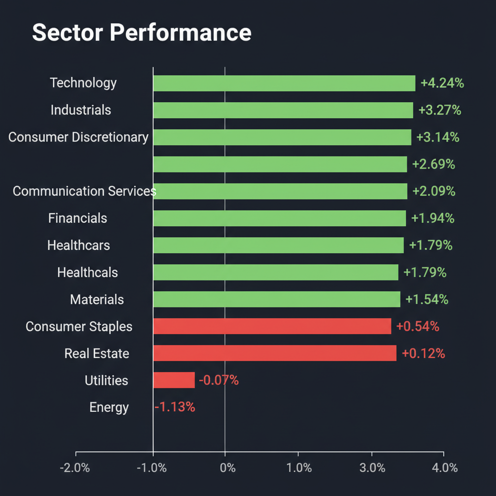
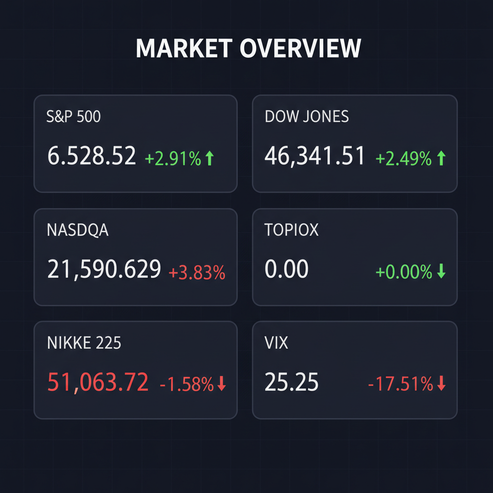

Daily Investment Report - 2026-04-01
Generated: 2026/4/1 8:16:14


投資チームミーティングの議長として、各専門家の分析を統合した投資家向けの最終レポートをお届けします。
1. エグゼクティブサマリー
- 米国市場はイラン紛争の「出口戦略」期待から急騰していますが、VIXは25台と依然警戒水域にあり、希望的観測に基づくショートカバー（買い戻し）の罠である可能性が高い状況です。
- 地政学リスクの過小評価や大型ハイテク株への過度な資金集中には警戒が必要であり、現在は無防備に追随買いをするのではなく、現金比率を高めダウンサイドヘッジを構築する防御の局面です。
- 投資機会は誰もが知る大型株ではなく、確実なキャッシュフローと独自の成長カタリストを持ち、マクロのノイズに強い「中小型の特化型SaaS」や「財務が強固な国内バリュー株」に存在します。
2. 注目銘柄リスト
強気（買い推奨）
- nCino (NCNO) [時価総額約40億ドル]: 金融機関向けクラウドSaaSを展開し、高金利下でもトップライン成長と収益性の改善を示しており、顧客の移行コストが高く解約率が極めて低いため。
- 象印マホービン (7965) [時価総額約1,000億円強]: 好決算を機に株価が急反発しており、無借金に近い強固な財務基盤とPBR1倍台前半の割安さから、下値リスクが限定的な良質バリュー株であるため。
- YEデジタル (2354) [時価総額約200億円台]: 盤石な財務基盤を持ち、物流2024年問題の解決に直結する倉庫制御システム（WES）を展開する、業績拡大中の隠れた国策銘柄であるため。
- スターマイカ・ホールディングス (2975) [時価総額約200億円台]: インフレ下で価値が向上する中古マンション再販ビジネスを展開し、安定した賃料収入と高配当により総還元性向に優れているため。
中立（様子見）
- Hope Bancorp (HOPE) [時価総額約14億ドル]: SMBCからの商業銀行部門買収は規模拡大に寄与するものの、米国の中小型銀行が抱える商業用不動産（CRE）ローンリスクや自己資本への影響を見極める必要があるため。
- CXApp (CXAI) [小型]: ワークプレイス体験を革新するSaaS転換期にあり大化けのポテンシャルを秘めているものの、現在は赤字によるキャッシュバーンが激しく、チャート上の底打ちを確認するまで待つべきであるため。
弱気（警戒）
- Vキューブ (3681) [時価総額約60億円]: 2025年12月期に大幅な赤字を計上しており、コロナ特需剥落後の構造改革の遅れによるキャッシュフロー毀損が深刻で、業績の底打ちが見えないため。
3. セクター推奨ランキング
- 1位：テクノロジー（特化型SaaS・ソフトウェア）
汎用AIではなく、金融や物流など特定業界の業務フローに深く統合された「バーティカル（特化型）SaaS」は、不況耐性が高く中長期的な成長と安定したキャッシュフローが期待できます。
景気後退リスクが和らぐ中で企業の設備投資意欲が回復傾向にあり、米国市場でも力強いモメンタム（上昇トレンド）を示しているためです。
足元では地政学プレミアムの剥落で下落していますが、中東情勢が突如悪化（テールリスク顕在化）した際、インフレ再燃からポートフォリオを守る最も強力なヘッジ要員として機能します。
米国の消費意欲は依然として底堅く、インフレが沈静化して実質購買力が向上すれば、ブランド力のある消費財やスポーツビジネスなどが追い風を受けます。
4. 今週の注目イベント
- 今週継続：中東情勢のヘッドライン動向（イスラム革命防衛隊の動向および米企業への脅威に関する続報）
- 今週継続：FRB高官発言および各種インフレ指標の発表（金利低下圧力の持続性の確認）
- 今週継続：日本市場における日米金利差を意識した為替（USD/JPY）の変動と、それに伴う日銀関連報道
- 今週順次：中小型企業の追加決算発表およびガイダンス（通期見通し）の確認
5. リスク要因
- 地政学リスクのヘッドフェイク（騙し）：市場が期待する「出口戦略」が頓挫し、中東での戦闘激化や原油施設への被害が生じた場合、原油高騰とインフレ再燃を引き起こすテールリスクがあります。
- VIX高止まりによるブルトラップ：VIXが低下したとはいえ25台という警戒水準にあり、現在の急騰はショートカバーに過ぎず、突発的な悪材料でパニック売りに転じる危険性があります。
- 日米デカップリングと為替リスク：米国株急騰に対して日経平均が逆行安となっている通り、日米金利差縮小を見越した急激な「円高」は、日本の輸出企業や市場全体への強い押し下げ圧力となります。
- 流動性枯渇リスク：赤字を垂れ流す中小型グロース株や、実益の伴わない過剰なAI関連株は、マクロショックが生じた際に真っ先に資金が枯渇し破綻リスクに直面します。
6. アクションアイテム
- 現金比率の積極的な引き上げ：現在の急騰を絶好の「利益確定・ポジション縮小の機会」と捉え、ポートフォリオの現金比率を平時の1.5倍〜2倍に引き上げてください。
- ストップロス（逆指値）の厳格な設定：ボラティリティが高い相場のため、新規に打診買いを行う際は、直近安値の直下に必ずストップロスの注文を市場に入れてください。
- ダウンサイドヘッジの構築：VIXの低下を利用してS&P 500のプットオプションを購入するか、最悪のシナリオに備えてエネルギーセクター（XLE）をヘッジ目的で一部組み入れてください。
- 中小型優良株への選別投資：大型ハイテク株の高値掴みは避け、nCinoや象印マホービンなど「強固な財務」「確実なキャッシュフロー」「独自の上昇カタリスト」を持つ銘柄のみに的を絞ってください。